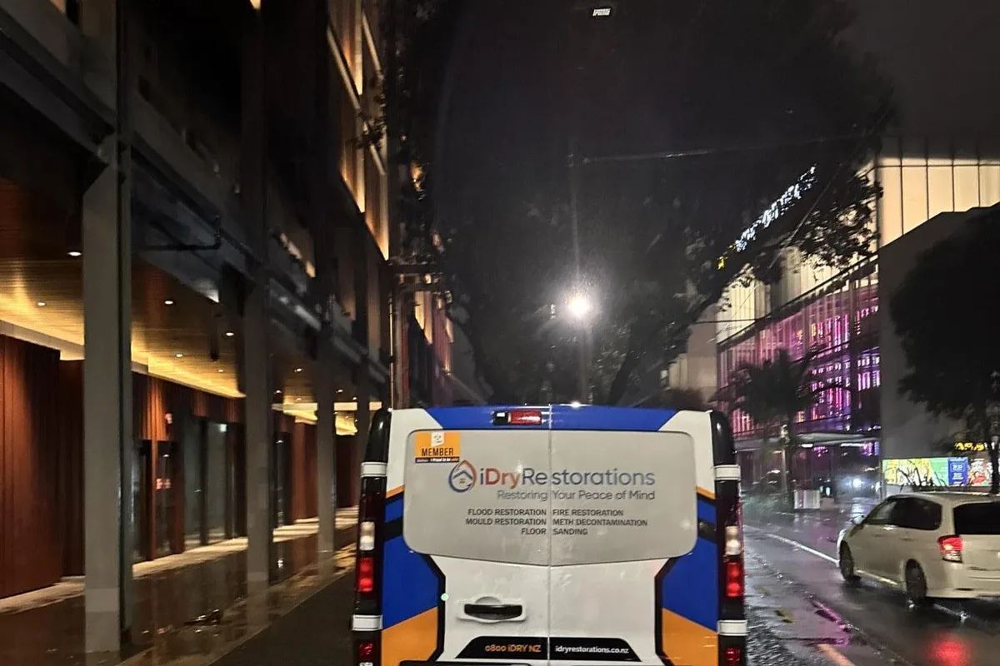
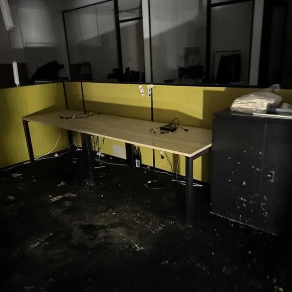
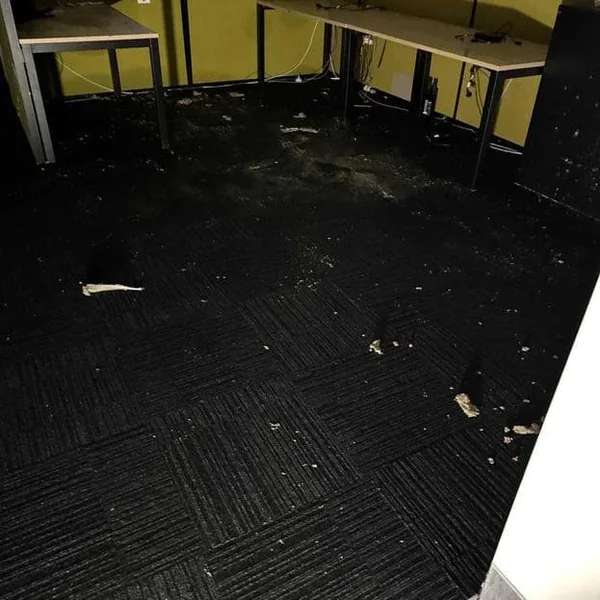
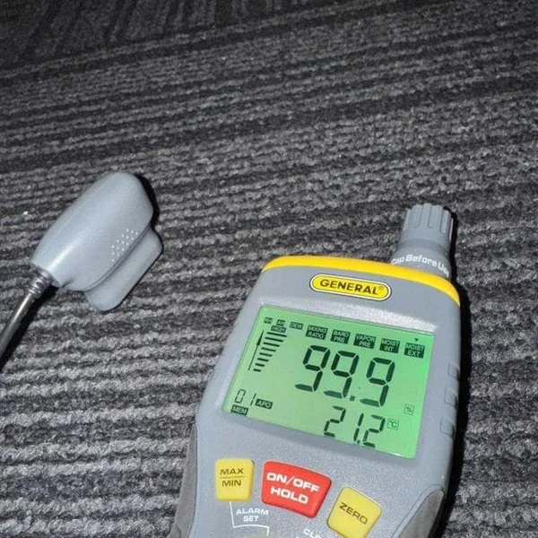
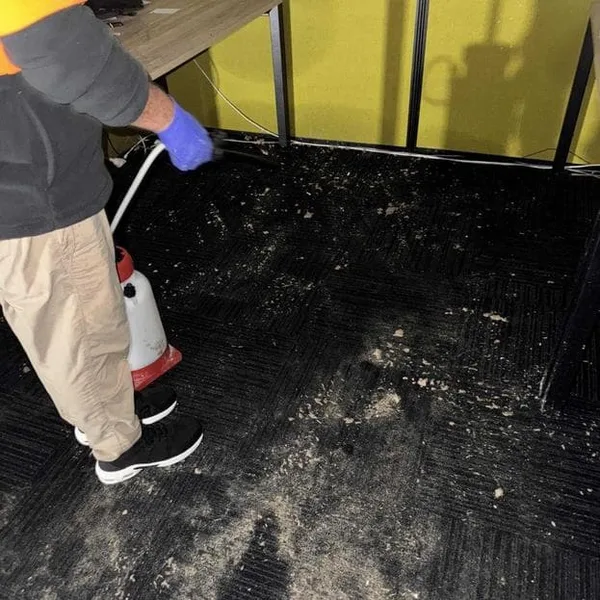
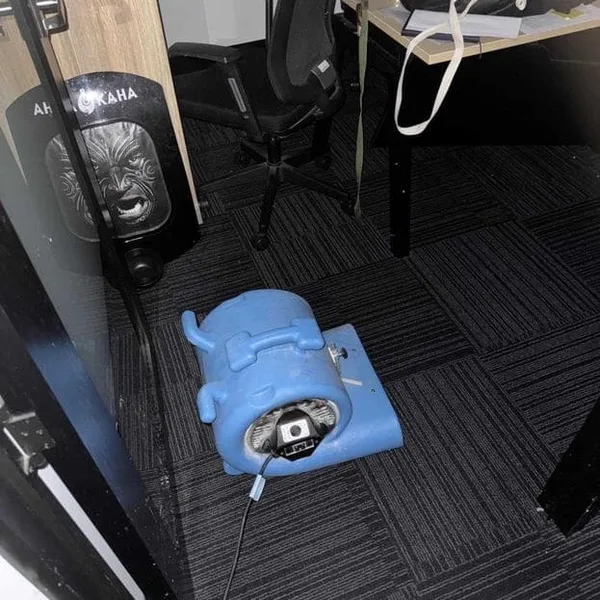
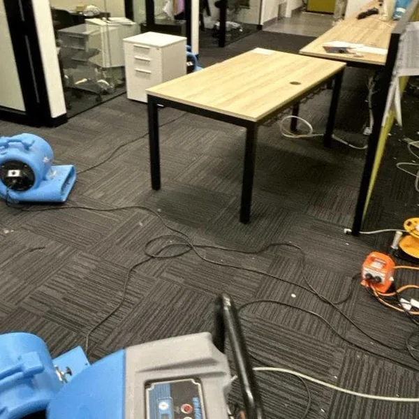
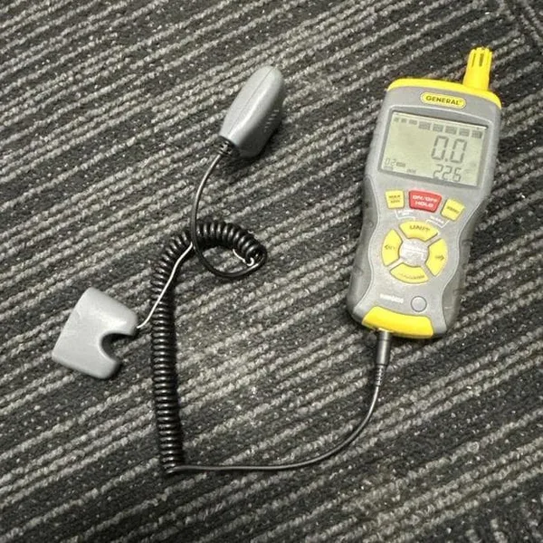

How our team restored the basement offices of one of Auckland's premier hotels after a burst hot water cylinder — responding the same evening and completing the restoration within 5 days.
Hotel & Hospitality
10 – 14 July 2025
5 day restoration

Cat 1Clean Water
5 DaysCompletion
26Blowers Deployed
6Dehumidifiers
The Problem
On 10 July 2025, a burst hot water cylinder pipe in the Level 1 pantry of the Park Hyatt Auckland — one of Auckland Central's premier five-star hotels — sent water cascading down into the basement administration offices below.
The leak, which occurred around 2pm, went undetected long enough for water to saturate the commercial carpet across the entire admin office area in the basement. When our team arrived that evening, moisture readings in all affected areas were critically high.
The damage was classified as a Category 1, Class 1 flood — clean water from a sanitary source. While this meant the water itself was not contaminated, the carpet and subfloor still required immediate professional extraction and drying to prevent deterioration and potential mould growth.

Saturated carpet in the admin office area

Water and debris on the office carpet

Initial moisture reading: 99.9%

Technician sanitising affected carpet
Our Approach
iDry Restorations responded the same evening, arriving on-site at the Park Hyatt Auckland with a full complement of extraction and drying equipment. The restoration followed a structured 5-day programme with daily monitoring and equipment adjustments.
Day 1 — 10 July
Emergency Response & Extraction
Our team extracted excessive water from the carpet using commercial water extractors, then cleaned and sanitised all affected areas. We installed 8 blowers and 2 dehumidifiers to begin the drying process immediately.
Note: Hotel staff cleaned the pantry area on Level 1 and placed their own dehumidifier in that space.
Day 2 — 11 July
Monitoring & Repositioning
Our technician took moisture readings across all areas. Readings showed the carpet was decreasing in some areas, but several spots still showed high levels. We repositioned equipment to better target those areas. A small amount of water was also found dripping onto the carpet from the roof, which was addressed.
Day 3 — 12 July
Continued Drying & Equipment Reduction
Moisture readings showed significant progress. The carpet in Office 1, Office 2, and the hallway still had some high-moisture patches. Equipment was repositioned to target remaining wet spots. With drying progressing well, we removed 3 blowers and 1 dehumidifier — leaving 5 blowers and 1 dehumidifier on-site.
Day 5 — 14 July
Drying Goal Reached & Handover
Final moisture readings confirmed that all carpet in Office 1, Office 2, and the hallway had reached the drying goal of 0% moisture content. All remaining equipment (5 blowers and 1 dehumidifier) was removed. The basement offices were returned to full operational use.

Air mover positioned in office area

Blowers and dehumidifier in the open office
The Outcome
The Park Hyatt Auckland's basement offices were fully restored within 5 days — from initial emergency response through to final equipment removal. Moisture readings dropped from 99.9% on Day 1 to 0% on Day 5, confirming complete drying had been achieved across all affected areas.
Restoration Summary
99.9% → 0%Moisture Reduction
26 / 6Total Blowers / Dehus
5 DaysStart to Finish
Same DayEmergency Response
Day 1: Moisture at 99.9%

Day 5: Moisture at 0.0% — drying goal reached
Key Takeaways
Same-day response matters: Arriving the same evening the burst pipe was reported allowed us to begin extraction immediately, preventing the clean water from deteriorating to Category 2 and avoiding significantly higher restoration costs.
Daily monitoring drives efficiency: By taking moisture readings every day and repositioning equipment to target remaining wet patches, we were able to reduce drying time and begin removing equipment on Day 3 — minimising disruption to the hotel's operations.
Category 1 floods are still serious: Even though the water from a burst pipe is clean, it can cause significant damage to commercial carpet, underlay, and subfloor if not dried professionally. Left untreated for more than 48 hours, Category 1 water deteriorates to Category 2, making restoration more complex and costly.
Equipment scaling saves costs: Starting with 8 blowers and 2 dehumidifiers and progressively removing equipment as areas dried meant the hotel only paid for the equipment needed at each stage of the restoration.
This project demonstrates that even a seemingly minor burst pipe can quickly cause extensive water damage in commercial buildings, particularly when water migrates between floors. Rapid professional response, proper extraction, and monitored drying are essential to achieving a full restoration without unnecessary cost or disruption.
For emergency water damage restoration in Auckland, contact iDry Restorations. We are available 24 hours a day, 7 days a week, and can have a team on-site within 60 minutes of your call. We work with all major insurers and provide full documentation for your claims process.
Burst Pipe or Water Damage Emergency?
Our IICRC-certified team responds within 60 minutes across Auckland — 24/7, including after-hours and weekends. We work directly with your insurer and provide full documentation.
iDry Restorations provides 24/7 emergency response across Auckland and can have a team on-site within 60 minutes. For the Park Hyatt Auckland, our team responded the same evening the burst pipe was reported, arriving with water extraction equipment and beginning the drying process immediately to minimise damage to the basement offices.
A Category 1 flood involves clean water from a sanitary source such as a burst pipe or supply line. Unlike Category 2 or 3 floods which involve contaminated water, Category 1 water does not pose an immediate health risk. However, if left untreated for more than 48 hours, Category 1 water can deteriorate to Category 2. Treatment involves water extraction, cleaning, sanitising, and professional drying with commercial blowers and dehumidifiers.
For Category 1 floods where the carpet is salvageable, we use a combination of water extraction, commercial air movers (blowers), and dehumidifiers. The blowers are positioned to force air across and under the carpet surface, while dehumidifiers remove moisture from the air. We take daily moisture readings to track progress and reposition equipment to target areas that are drying more slowly. This approach can save thousands in carpet replacement costs.
Yes, iDry Restorations regularly works with hotels, restaurants, and hospitality venues across Auckland. We understand the urgency of restoring commercial hospitality properties and work around operational schedules to minimise disruption. We provide full documentation for insurance claims and coordinate directly with property management teams throughout the restoration process.
Emergency? Call Auckland's Fastest Response Team
Don't wait — our IICRC-certified team is standing by 24/7. On-site within 60 minutes across all of Auckland.